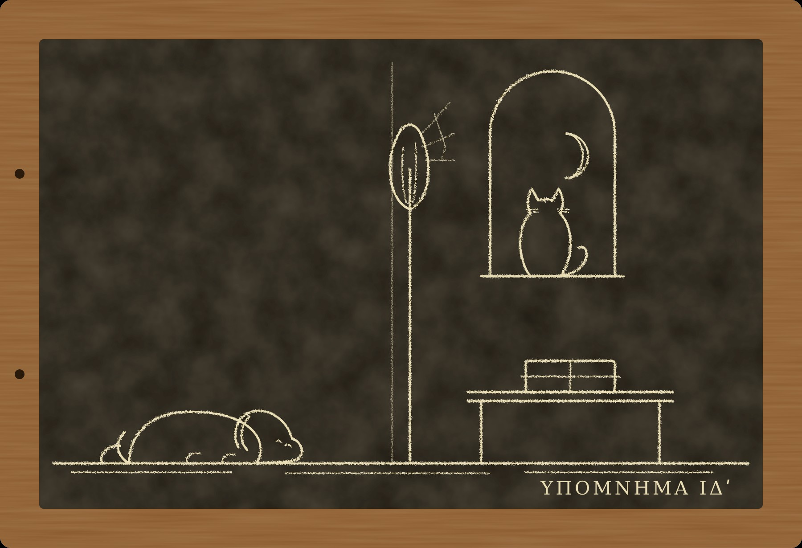

Гипомнема XIV Прялка

I
Одиннадцать лет назад, рассказывая Никанору о деле двести двадцать шестого года, я записал в этих табличках, что жены у меня нет давно и что о ней я писать не стану. Это было обещание, а не клятва. Клятв я не даю, и за нарушенное обещание до луны не умирают. Поэтому я его нарушаю. Причина простая: умер последний человек, который слышал её голос у алтаря, и, если я не запишу этого теперь, этого не будет нигде, кроме моей памяти, а моей памяти, как известно всему Риму, верить нельзя.
В конце марта двести пятидесятого года, через месяц после той луны, которую я прожил, сам не зная почему, ко мне поднялся мальчишка с Велабра, сын сапожника. Он сказал, что старый страж Тимон, который живёт над ними, велел меня позвать, и что звать надо скорее.
Ферокс пошёл со мной. Ему трудно теперь даются лестницы вниз, и вверх он поднимается медленнее меня, но оставаться дома, когда я ухожу вечером, он отказывается так твёрдо, что я перестал спорить. Пами остался на балке. Он сказал, что старики пахнут одинаково и что одного он уже нюхал зимой.
Тимон лежал на узкой постели у стены, укрытый двумя плащами. За месяц он стал вдвое меньше. Лекарь, которого позвал сапожник, сидел внизу и пил вино, потому что делать наверху ему было нечего. Он сказал мне на лестнице, что старик не болен, а просто кончается, как кончается масло в лампе, и что до утра он, скорее всего, не доживёт.
Я спросил, не клялся ли Тимон в последний месяц. Лекарь пожал плечами. Сапожник сказал, что старик с февраля из дому не выходил.
Значит, кары здесь не было. Седьмую подаренную клятву Тимон дал в конце января, и луна после неё давно прошла, как прошла потом и моя. Если страж умирает после луны, коллегия не вычёркивает его память. Те семеро, за кого он поклялся у храма Кастора, так и останутся в списках поклявшихся, и их никто не тронет.
Я сел у постели. Ферокс лёг у двери.
— Ты пришёл, — сказал Тимон, не открывая глаз. Голос у него был тихий, но слова он выговаривал чисто, по-стражески. — Я боялся, что не придёшь.
— Почему?
— Потому что ты не знаешь, зачем я позвал. А люди не любят идти туда, где не знают зачем.
Он открыл глаза и посмотрел на меня.
— Я двадцать три года храню одну клятву, которую должен был отдать тебе. Пока ты был изгнан, отдать было нельзя. Изгнанному не говорят. Потом тебя вернули, и я испугался. Я трус, хранитель. Я только к старости научился лгать у алтаря, а говорить правду не научился вовсе.
— Чья клятва?
— Твоей жены, — сказал Тимон. — Весной двести двадцать седьмого года она клялась у Дия Фидия. Я хранил. Вторым был Феон, который потом служил на Палатине. Ты не знал?
Я не знал. Я сидел у его постели и смотрел на его руки поверх плащей, и мне казалось, что комната стала очень большой, а лампа очень маленькой.
— Я плохо помню теперь, — сказал Тимон. — Память уходит, как вода из треснувшего кувшина. Зимой, когда я понял, что не доживу до лета, я её записал. Я ни разу в жизни ничего не писал, хранитель. Я позвал соседского мальчишку, чтобы он показал мне буквы, и писал три ночи. Табличка у меня под постелью. Возьми её, когда я умру.
— Почему не сейчас?
— Потому что, пока я жив, клятва моя, — сказал старик. — Я её двадцать три года носил. Дай мне донести её до конца.
Я не стал спорить. Он закрыл глаза. Через некоторое время он сказал, уже тише:
— Я думал, если я буду лгать за других, как она лгала за тебя, я пойму, за что её взяли. Я лгал семь раз. Меня не взяли. Я так и не понял.
Больше он ничего не сказал. Под утро, когда за окном посерело, он перестал дышать, тихо, будто уснул глубже. Я закрыл ему глаза и позвал сапожника.
II
Таблички под постелью не было.
Я понял это не сразу. Сначала пришли соседки обмыть тело, потом сапожник побежал за либитинарием, потом пришёл человек из коллегии, которому полагается знать, когда умирает страж. Я стоял у окна и ждал, когда все уйдут. Когда они ушли и унесли старика вниз, я опустился на колени и посмотрел под постель. Там был сундучок с двумя туниками, пара старых сандалий, пыль и больше ничего.
Сапожник клялся, что никто чужой наверх не поднимался. Потом вспомнил, что на рассвете, когда я уже позвал его и он бегал за соседками, к старику приходила старуха с хлебом. Она и раньше приходила, раз в несколько дней, приносила хлеб и уходила. Сапожник думал, что это родственница. Он не видел, как она уходила.
Я тоже её не видел. На рассвете я стоял внизу, у лестницы, и говорил с соседками. Наверху оставался только Ферокс.
Ферокс всё это время лежал у двери. Когда я позвал его, он поднялся, подошёл к постели, обнюхал её, потом пол, потом сундучок. Потом сел и посмотрел на меня.
— Тут была одна, — сказал он. — Пока ты внизу говорил. Она погладила меня, и я её не тронул.
— Ты её знаешь?
— Я её помню, — сказал Ферокс. — Она приходила к нам, когда твоя болела. Тогда, давно, когда мы только пришли к тебе. Твоя лежала, а эта сидела рядом и меняла ей тряпки на лбу. Она пахнет так же. Только старее.
Я сел на пол рядом с ним. Ферокс никогда раньше не говорил о моей жене. За двадцать четыре года ни разу. Я думал, что он её не помнит: молоссы столько не живут, а собачья память, говорят, короче человеческой.
— Ты помнишь её? — спросил я. — Мою?
Ферокс положил голову мне на колени.
— Она меня кормила, — сказал он. — Она давала больше, чем ты, и не говорила «сидеть». Она пахла шерстью. Потом она лежала и пахла жаром. Потом её унесли, и ты долго не ел. Я помню.
Я сидел на полу в комнате мёртвого стража и думал о старухе, которая меняла моей жене тряпки на лбу. Тогда, в последние три дня, к нам приходили многие: соседки, лекарь, жрица из храма Исиды, которую позвала соседка, хотя мы в Исиду не верили. Приходила и старая кормилица из дома, где выросла моя жена. Её звали Мирра. Она сидела у постели три дня и три ночи и уходила, только когда я её гнал. На похоронах она стояла рядом с Евменом.
Я не видел её двадцать три года. Но если она жива, я знал, где её искать.
III
Теперь я должен рассказать о ней, раз уж нарушил обещание.
Её звали Мелитта. Она была старшей сестрой Евмена, на четыре года старше его и на три года моложе меня. Их отец был греком из Неаполя, держал в Риме лавку с книгами, разорился и умер, когда ей было шестнадцать, а брату двенадцать. Я покупал у него таблички. Так мы и познакомились: она стояла за прилавком вместо отца и помнила, какие таблички я брал в прошлый раз, и в позапрошлый, и сколько за них платил.
Она помнила всё, что ей говорили. Не как страж слов, потому что стражей учат помнить, а их она не училась. Она помнила просто так, как другие люди дышат. Торговки на рынке у Тройных ворот её боялись: она могла повторить, что каждая из них сказала о цене на прошлой неделе, слово в слово, и спорить с ней было бесполезно. Её брат, когда был мальчишкой, говорил, что от сестры ничего нельзя спрятать, даже то, что сказал во сне.
Мы поженились через год после смерти её отца. Брат переехал к нам. Через три года он попросил, чтобы я отвёл его к Аполлонию, и я отвёл, потому что она просила. Детей боги нам не дали. Она говорила, что так даже лучше, потому что у неё и так двое: один большой и один маленький, и оба вечно что-то бормочут.
Когда брат вырос и стал стражем, Аполлоний поставил нас в пару. Восемь лет каждый вечер он приходил к нам, садился за стол против меня, и мы повторяли всё, что хранили за день. Он говорил первым. А она сидела в углу за прялкой, у окна, где светлее, и пряла.
Пряла она хорошо, но не поэтому садилась к окну. Я понял это только теперь. Она садилась, потому что ей нравилось слушать. Восемь лет она слушала, как два стража слов повторяют чужие клятвы, и восемь лет помнила их все.
Однажды, году в двести двадцать четвёртом, когда брат ушёл и я убирал со стола, она сказала, не поднимая глаз от нитей:
— Вчера вы сказали клятву вдовы сенатора не так, как в прошлом году.
Я засмеялся. Я помню, что засмеялся, и помню, что сказал:
— Мы стражи слов. Ты пряха.
Она ничего не ответила. Она пряла дальше, и через некоторое время я забыл об этом. Я забыл это так хорошо, что не вспомнил ни на суде, ни в месяц ожидания, ни потом. Я вспомнил это в комнате Тимона, когда сидел на полу рядом с Фероксом, и это было хуже, чем когда я понял, что моя память лжёт.
Весной двести двадцать шестого года я поклялся у Дия Фидия, что в клятве Гельвии были слова «при жизни его». Учителя казнили на девятый день. Я пришёл домой с Квиринала в тот вечер, когда поклялся, и сказал ей, что поклялся. Она стояла у очага. Она ничего не сказала, только побелела так, что я испугался, не заболела ли она. Потом она села за прялку и пряла до ночи, хотя света уже не было.
Потом был месяц ожидания. Она считала ночи вместе со мной. Каждый вечер я смотрел на запад, а она смотрела на меня. Я думал тогда, что она боится за меня, и это была правда, но не вся. В тот месяц у меня появились пёс и кот. Пса я купил у торговца у Эсквилинских ворот, потому что он смотрел на меня так, будто я лучший человек в Риме, а мне в тот месяц очень нужно было, чтобы кто-нибудь так смотрел. Кота мы купили вместе, на берегу Тибра, у контрабандиста, который рад был отдать его за медяк. Выбрала его она. Сказала, что котам всё равно, кто их хозяин, а это сейчас как раз то, что нужно.
Луна пришла. Я был жив. Я обнял её, а она не обрадовалась. Она стояла в моих руках, как стоят в дверях, и смотрела мимо.
Потом поклялась Гельвия, и тоже дожила. Коллегия меня изгнала. Мы продали дом и переехали в Субуру, туда, где я живу и теперь. Брат больше не приходил.
Весной двести двадцать седьмого года она заболела. Лихорадка взяла её за три дня. Лекарь сказал, что так бывает, весной в низинах у реки дурной воздух. Я похоронил её у Аппиевой дороги, в общей гробнице, где за небольшую плату хоронят тех, у кого нет своей. Брат стоял в стороне, рядом с Миррой, и ушёл, не сказав мне ни слова.
Двадцать три года я думал, что её убила лихорадка.
IV
Евмен живёт на Квиринале, недалеко от храма Квирина, в доме, который купил, когда поступил ко двору. Я знал, где этот дом, потому что Никанор однажды показал мне его с улицы. Я никогда туда не заходил.
Я пошёл туда в тот же день, после полудня. Ферокс шёл со мной. Пами, к моему удивлению, тоже пошёл. Когда я вернулся домой за плащом и рассказал ему, куда иду, он спрыгнул с балки и пошёл впереди, по краю мостовой, как ходит, когда собирается сказать что-нибудь, за что потом потребует рыбы.
Дверь открыл раб, молодой, и сказал, что хозяина нет, хозяин в походе с Августом. Я сказал, что пришёл не к хозяину, а к Мирре. Раб посмотрел на меня, на собаку и на кота и ушёл в дом. Через некоторое время он вернулся и провёл меня через атрий во внутренний двор.
Мирра сидела в тени у стены, на скамье, с корзиной на коленях. Ей было за семьдесят, она была маленькая и сухая, с тёмным морщинистым лицом и белыми волосами, убранными под платок. Она подняла голову и долго смотрела на меня.
Ферокс пошёл к ней первым. Он подошёл, обнюхал её руки и положил голову ей на колени, поверх корзины, как клал Фебе в саду на Каринах. Мирра положила ладонь ему на загривок.
— Он меня помнит, — сказала она. — Тогда он был молодой. Лежал у её постели и не уходил. Ты гнал его, а он не уходил.
— Он и сейчас не уходит, — сказал я.
Мирра кивнула. Потом достала из-под корзины табличку, двойную, в простой деревянной рамке, связанную шнурком, и протянула мне.
— Я не умею читать, — сказала она. — Хозяин велел мне перед отъездом ходить к старику и смотреть. Сказал, что старик скоро умрёт и что если он что-нибудь напишет, это нужно забрать. Я ходила, носила ему хлеб. Он рассказывал мне про неё. Про то, как она стояла у алтаря. Сегодня утром я пришла и увидела, что ты сидишь внизу, а старик наверху мёртвый. Я взяла это из-под постели. Хозяин велел сжечь. Я не смогла.
— Почему?
— Потому что это про девочку, — сказала Мирра. — Я её кормила. Я не могу сжечь девочку.
Пами всё это время ходил по двору, нюхал углы и наконец ушёл в открытую дверь дальней комнаты. Через некоторое время он вышел и сел у моих ног.
— Там стоит прялка, — сказал он. — В углу, у окна. На ней шерсть. Шерсть никто не трогал так давно, что в ней жили мыши и ушли. Пахнет старухой, потому что старуха её протирает. И ещё чем-то, чего я не знаю. Может быть, той, твоей. Под старухой, совсем чуть-чуть. Я бы в этом не поклялся, но я и не клянусь.
Я спросил Мирру, чья это прялка.
— Её, — сказала Мирра. — Когда ты продавал дом, ты её не взял. Я взяла. Хозяин знает. Он один раз зашёл ко мне в комнату, увидел её и вышел. С тех пор не заходит.
Я развязал шнурок и открыл табличку.
V
Тимон писал так, как пишет человек, который никогда не писал. Буквы были большие, кривые, некоторые стояли задом наперёд, и между словами не было промежутков. Воск в нескольких местах был продавлен до дерева. Я читал медленно, вслух, потому что иначе не мог разобрать. Мирра слушала. Ферокс слушал. Пами смотрел на мои губы.
Сначала шла формула. Тимон записал её так, как стражи запоминают: со всеми словами, ничего не пропуская.
«Я, Мелитта, дочь Эвагора, жена Марка Аврелия Мнесарха, восемь лет каждый вечер сидела за прялкой в комнате, где мой муж и мой брат повторяли хранимое. Клятву Гельвии, вдовы сенатора, они с самого первого вечера говорили со словами „при жизни его“. Я помню это. Клянусь в этом».
Ниже, другими буквами, ещё более кривыми, Тимон записал то, что стражи никогда не записывают, потому что стражи не записывают ничего.
«У Дия Фидия. На седьмой день после луны. Жрец Квирина. Хранили я и Феон. Брат стоял у колонны».
«Голос не сел. Перед словами „с самого первого вечера“ посмотрела на брата».
«Просила коллегию вернуть мужу имя. Коллегия сказала: ждём луны».
«Умерла за шесть ночей до луны. Лихорадка».
«Евмен просил коллегию не говорить мужу. Коллегия согласилась. Изгнанному не говорят».
И в самом низу, мельче всего, видимо, в последнюю из трёх ночей, когда рука уже устала:
«Я знал, что она лжёт. Я видел. Я молчал двадцать три года. Прости, хранитель».
Я закрыл табличку. Двор был тихий. Где-то за стеной, на улице, кричал разносчик воды.
Я понял всё сразу, как понимают то, что знали давно и не позволяли себе знать.
Она помнила первые вечера. Три года назад, в двести двадцать третьем, когда Гельвия поклялась, мы с братом повторили её клятву в первый вечер без слов «при жизни его», потому что их не было. Она это слышала. Потом, вечер за вечером, год за годом, брат говорил формулу первым и говорил её чуть иначе. Я повторял за ним. Через три года слова стояли в формуле так прочно, будто стояли всегда. Моя память их приняла. Её память не приняла, потому что её память ничего не принимала и ничего не отдавала. Она помнила оба вечера: тот, первый, и тот, последний. Она сказала мне об этом в двести двадцать четвёртом году, и я засмеялся.
Когда я пришёл домой с Квиринала и сказал, что поклялся, она поняла, что моя клятва неправда, и поняла, чья это работа. А через год, когда меня изгнали и мы жили в Субуре, она пошла к Дию Фидию и поклялась в том, что слова были с самого начала. Она поклялась в неправде, зная, что это неправда, чтобы вернуть мне имя.
Коллегия ждала луны. Она до луны не дожила. Её смерть сказала коллегии, что она солгала, а значит, слов в первый вечер не было, а значит, моя память нечиста. Её ложь, которая должна была меня оправдать, закрыла моё дело навсегда.
И никто мне не сказал. Её брат об этом позаботился.
VI
Мирра рассказала остальное сама. Я её не спрашивал. Она сидела, держа руку на загривке Ферокса, и говорила, глядя не на меня, а на дверь дальней комнаты, где стояла прялка.
В двести двадцать шестом году, на третью ночь после суда, девочка пришла в дом брата. Евмен тогда жил один, в двух комнатах у Виминальских ворот, и Мирра жила при нём. Девочка была белая и говорила тихо. Она сказала брату, что знает, что он сделал. Брат не отпирался. Мирра слышала их через стену.
— Она сказала: я пойду к алтарю и поклянусь, как было на самом деле. Он сказал: тогда его клятва станет ложной, и весь Рим будет ждать, что он умрёт до луны. А если не умрёт, скажут, что он продал формулу, и казнят его вместо Аполлония. Ты выбираешь, кого из них казнят. Она ушла и ничего не сделала. Через шесть дней старика казнили.
Мирра помолчала.
— Потом ты не умер. Она поняла, что, если бы она поклялась, ты бы тоже не умер. Боги бы тебя не тронули, а люди, может быть, и не тронули бы. Она поняла, что старика можно было спасти. Она стала другая. Она не плакала, она ходила по дому, как ходят по чужому.
— А через год?
— Через год она пришла снова. Сказала брату, что пойдёт к алтарю и поклянётся, что слова были. Пусть коллегия вернёт тебе имя. Тогда хоть один из вас будет чист, сказала она, раз уж старика не вернуть. Брат сказал ей, что это не поможет. Сказал: если ты солжёшь, ты умрёшь, и твоя смерть его закопает. Она спросила: почему ты думаешь, что я умру, если он не умер? Он не ответил. Она пошла и поклялась.
Значит, её ложь защищала обоих. Если бы она поклялась в правде, она подтвердила бы, что мою память переделал её брат и что я своей клятвой убил учителя. Она поклялась в неправде, и это возвращало мне имя и прятало вину брата. Она стояла между нами, и другого места, где можно было стоять, у неё не было.
И брат её предупредил. Он сказал ей правду. Он не лжёт.
— Она считала ночи? — спросил я.
— Считала, — сказала Мирра. — Сидела за прялкой и считала. Пальцами по нитке. Ты разве не видел?
Я не видел. Я видел, что она прядёт. Я думал, что она прядёт, потому что ей надо чем-то занять руки в Субуре, где у неё ничего не осталось.
— За девять ночей до луны, — сказала Мирра, — она пришла к брату в последний раз. Она уже была горячая. Она спросила его, я помню, она спросила: «Кто прав, ты или Аполлоний?» Он ответил. Я не слышала ответа, он говорил тихо, он всегда говорил с ней тихо. А она засмеялась. Первый раз за год я слышала, как она смеётся. Она сказала: «Значит, в этом доме честная одна я». И ушла. Через три дня я сидела у её постели.
Я спросил, не знает ли она, что он ответил.
— Нет, — сказала Мирра. — Я его один раз спросила, потом, после похорон. Он сказал: «Она спросила, я ответил». И больше ничего.
VII
Я вернулся в Субуру к ночи. Табличку Тимона я нёс за пазухой. Мирра отдала её мне так же, как Фебе отдала мне лунулу: не как вещь, а как то, что теперь некуда деть.
Никанор ждал меня наверху. Он пришёл повторять хранимое, как каждый вечер, и сидел на моём табурете у стола. Увидев меня, он встал.
Я рассказал ему всё. Это заняло много времени, потому что я рассказывал так, как нас учили: всё, что слышал, и ничего, кроме этого. Никанор слушал, сложив руки на коленях. Пами спал на балке, Ферокс у двери.
Когда я кончил, Никанор долго молчал.
— Евмен сказал тебе на Палатине, — проговорил он наконец, — что ты знаешь, что тебе она бы не поверила.
— Сказал.
— Она бы не поверила тебе, потому что знала, что твоя память ложная. Что бы ты ей ни сказал о богах, ты говорил бы из той памяти. А брату она верила, потому что знала, что его память настоящая. Он сам её сделал.
— Да, — сказал я.
— Тогда я знаю, что он ей ответил, — сказал Никанор.
Я поднял голову.
— Ты тоже знаешь, учитель. Она спросила, кто прав. Он сказал правду. Он всегда говорит правду, когда его спрашивают. Аполлоний был прав: боги спрашивают за веру. Она поверила брату. Она знала, что солгала. Она засмеялась, потому что поняла, что умрёт за то, что одна в доме говорила правду, хотя бы о себе самой.
Я не ответил. Никанор, может быть, был прав. А может быть, Евмен сказал ей другое: что Аполлоний ошибался, что боги карают неправду как таковую, что я жив случайно. Тогда она засмеялась бы над другим. Я не знаю, что он ей сказал. Я знаю только, что через три дня она умерла.
И я не знаю, от чего. Лихорадка весной в низинах у реки берёт многих. Сегодня утром умер Тимон, который лгал семь раз и умер от старости, когда все его луны прошли. В феврале я сам лгал у жертвенника и дожил. Сорок шесть вчерашних христиан лгали и живут. Онесим умер, но его отравили. Двенадцать лет я находил убийцу за каждой карой. За этой убийцы нет. Её убили лихорадка, или боги, или счёт, который она вела пальцами по нитке, и ни одного из троих нельзя позвать к претору.
Никанор ушёл за полночь, не повторив хранимого. Он сказал, что повторит завтра за двоих.
VIII
Я достал из-под половицы табличку «Чужие кары» и долго держал её, не раскрывая.
Лицевая сторона для чужих. Так я её назвал, когда завёл, двенадцать лет назад, в первую весну, после дела Фирма. На ней пятнадцать дел, и за каждым, кроме мальчика-Августа, убийство, которое Рим принял за кару. На обороте семь строк, и каждая про меня: кого я обманул, кому велел не считать, за кого промолчал, где поклялся сам.
Она не была чужой. Но и своим делом я назвать её не мог: она клялась не по моей просьбе, не по моей формуле и не в моём присутствии. Я даже не знал, что она клялась.
Пами спустился с балки на стол и сел рядом с табличкой.
— Ты не знаешь, куда её записать, — сказал он.
— Не знаю.
— Запиши на обе стороны, — сказал кот. — Ты же сам говоришь, что она была между. Пусть будет между.
Я посмотрел на него. Он смотрел на меня жёлтыми глазами и, как всегда, ждал, когда я скажу что-нибудь о рыбе.
— Ты её помнишь? — спросил я.
Пами отвернулся.
— Она выбрала меня на реке, — сказал он, глядя в окно. — Она давала рыбу и ничего не просила взамен. Ни «сиди», ни «уйди с табличек». Больше так никто не делал. Ты не делаешь. Рыбу давай.
Я дал ему рыбу. Потом раскрыл табличку и на лицевой стороне, под пятнадцатью делами, записал шестнадцатое:
«Мелитта, моя жена. Солгала под клятвой ради меня, зная, что лжёт. Умерла до луны. Не убийство. Кара или счёт, не знаю».
Это было первое дело на лицевой стороне, за которым я не нашёл убийцы. Двенадцать лет я искал такое дело и боялся его найти, потому что оно доказало бы, что боги карают. Теперь оно лежало передо мной и не доказывало ничего. Рядом с ним на обороте стояла моя собственная строка, записанная в начале марта: «Поклялся, что слышал клятву Анфусы. Её не было. Знал, что лгу. Жив. Не знаю почему». Её смерть и моя жизнь лежали на одной табличке, на разных сторонах, как на двух чашах весов, и чаши стояли ровно.
Я перевернул табличку и на обороте, под семью строками, записал восьмую:
«Я. Сказал ей: мы стражи слов, ты пряха. Не услышал».
Ферокс поднялся у двери, подошёл и положил голову мне на колени, как положил её днём Мирре.
— Ты пахнешь, как тогда, — сказал он. — Когда её унесли.
— Знаю.
— Ты тогда долго не ел.
— Я поем, — сказал я.
Я положил табличку Тимона под половицу, рядом с «Чужими карами» и с лунулой Фебе. Теперь там лежат три вещи, и все три про женщин, которые помнили то, чего никто не помнит, и молчали ради других. Евмен на севере, с Августом, против готов. Когда-нибудь он вернётся или не вернётся. Если вернётся, я спрошу его, что он ей ответил. Он ответит правду. Он всегда говорит правду, когда его спрашивают.
Я не уверен, что хочу её знать. Но я спрошу.
Тбилиси, декабрь 2025